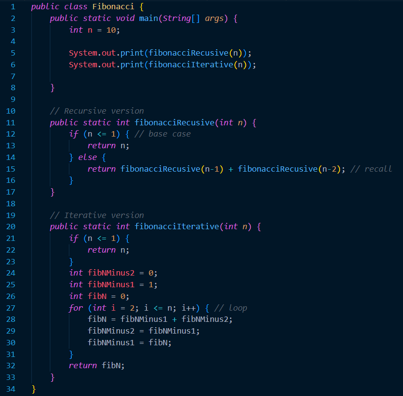

Recursion
Prerequisite Knowledge and Terms
Before proceeding with this tutorial, make sure you are familiar with the following concepts:- A basic understanding of variables, primitive data types and objects.
- Familiarity with forms of iteration such as 'for loops' and 'while loops.'
- Familiarity with forms of conditional statements such as 'if,' 'else if' and 'if-else' statements
- Element: A specific value inside an array.
- Index: A 0 based positioning system that determines the positions of specific elements inside an array.
- Array length: the number of elements inside the array. Once the array length is determined, it cannot be changed.
Introduction
Recursion is a technique in programming where a function calls itself. This can be useful when solving problems that can be broken down into small, similar problems. A recursive function has a few parts to it. To begin with, there is always a base case. A base case is essentially the ending point of the loop that terminates the whole recursive process. Without a base case, the method will repeatedly call itself and will end up crashing the program. The next part of a recursive function varies from problem to problem. However, in its simplest form, the method will have a return statement that ends up calling itself again along with another operation depending on the problem.The interesting thing about recursion is that any recursive function can be recreated using forms of iteration. Recursion and iteration are both ways to repeat a set of instructions in Java. Throughout the rest of this tutorial, the differences between the two techniques will become clear.
Recursion vs Iteration
Recursion and iteration are both ways to repeat a set of instructions in Java. Recursion is when a function calls itself, while iteration is when a loop repeats a set of instructions.| Recursion | Iteration |
|---|---|
| A recursive functions repeatedly calls itself until a base case stops the recursion. | An iterative function is a loop that executes a block of code until a certain condition is met. |
| Recursion is very easy to read and understand. | Iteration can be very confusing and difficult to read. |
| Recursion can be memory-intesnive and can lead to *stack overflow errors if the recursion depth is very high. | Iterative code can more effecient than recursion because it does not involve creating new *stack frames. |
*stack frame: a data structure used by computer programs to keep track of the execution of a function or subroutine.
*stack overflow: an error that occurs when a program tries to use too much stack space within a function.
*stack overflow: an error that occurs when a program tries to use too much stack space within a function.
Recursion Example
The following program has two methods where both of which return the `n`th fibonacci number. The first method, fibonacciRecursive(n), uses recursion to solve the problem. The second method, fibonacciIterative(n), uses iteration to solve the problem.
On one hand, we can see that the recusrive method has a lot less code, and is much easier to read. On the other hand, the iterative method has many local variables which can make understanding the code difficult.
As we can see in the recursive technique, the first step that happens is running base case. As explained before, the base case is a conditionnel statement that has the end goal of ending the recursive calls. In this example, the base case checks if the `n` parameter is less than or equal to 1. If thus is true, then simply return n.
The second step in the recursive technique is to add additional subprogram operations. However, in this case, the problem is simple enough such that having more opertions is unnecessary. As a result, we move onto step 3, which is adding the return statement. It is important to note that the return statement should always call the method within itself. In the example above, we can see that the return statement adds the sum of the return values of fibonacciRecursive(n - 1) and fibonacciRecursive(n - 2); calls itself twice in the return statement.
Without goin into to too much depth, the iterative version of a recursive algorithm always has some form of iteration. In this exmaple, there is a `for loop` that loops through all the numbers from 2 all the way to n. Methods that use iteration varry from problem to problem. They do not have a set framework like recursive methods. This is one of the reasons why they can be hard to analyze at times.
Additional Takeaways
- Understanding the framework of the recursion technique can be very easy, however implementing it is difficult. Do not be discouraged if it is difficult to understand what a recursion algorithm does when first trying it out.
- Make sure to always have a base case. If your recurisve algorithm does not have a base case then there will be an infinte loop.